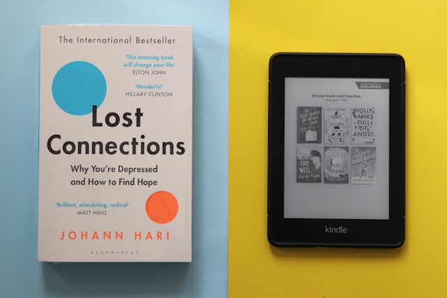

Green computing refers to environmentally sustainable computing practices aimed at reducing the carbon footprint of information technology systems. This includes strategies like minimizing energy consumption, reducing electronic waste, and using resources more efficiently. Ebooks, as digital replacements for printed books, significantly contribute to green computing by offering a sustainable alternative to traditional publishing methods. Their role in reducing environmental impact can be examined through various dimensions including resource efficiency, waste reduction, and energy optimization.
Traditional book production relies heavily on natural resources, primarily trees for paper. According to estimates, about 30 million trees are cut down annually to produce books sold in the United States alone. Ebooks eliminate the need for paper, ink, and other materials required for printing and binding physical books. This conservation of raw materials is a direct contribution to green computing, as it aligns with the principle of using fewer physical resources to achieve similar or superior outcomes. Additionally, ebooks reduce water usage, a critical aspect of the papermaking process. For instance, it takes approximately 13 liters of water to produce a single sheet of paper. By transitioning to digital formats, ebook technology helps preserve water resources, which are becoming increasingly scarce due to climate change.
The traditional book industry has a considerable carbon footprint. From logging and manufacturing to transportation and retail, each stage of the physical book lifecycle generates greenhouse gas emissions. Ebooks bypass these stages entirely. Once created, an ebook can be distributed worldwide without the need for physical shipping, which often involves fossil fuel-powered transportation. While the initial production of e-readers or digital devices does have an environmental cost, their long-term use offsets this impact significantly. A single e-reader, capable of storing thousands of books, can reduce the carbon footprint associated with producing and distributing those books in physical form. Studies suggest that reading 20-30 ebooks on a single device offsets the carbon emissions involved in its production.
Ebooks contribute to green computing by minimizing electronic and physical waste. Traditional books, when discarded, contribute to landfill overflow and waste management issues. In contrast, digital books are intangible and do not result in physical waste. Additionally, unsold physical books often end up being pulped, a wasteful practice that exacerbates environmental degradation. By shifting to digital formats, publishers and consumers can significantly reduce the volume of waste generated by the publishing industry. Moreover, the ephemeral nature of ebooks aligns with circular economy principles, where digital content can be updated, reused, and shared without generating additional waste. Unlike physical books, which degrade over time, ebooks remain viable indefinitely, provided the necessary hardware and software support is maintained. This longevity underscores their alignment with sustainable computing practices.
The distribution and consumption of ebooks also contribute to energy efficiency, a core tenet of green computing. While digital devices require electricity to operate, the energy consumption of an e-reader is minimal compared to the energy used in traditional book production, distribution, and retail operations. For example, the energy required to manufacture and transport a single printed book is significantly higher than the energy required to download and read an ebook. Furthermore, advancements in e-reader technology, such as the use of energy-efficient e-ink displays and long-lasting batteries, have made these devices more sustainable over time. Cloud-based storage and distribution systems further enhance the energy efficiency of ebooks. By leveraging scalable cloud infrastructure, ebooks can be distributed to millions of users with minimal incremental energy cost. This scalability ensures that the environmental impact of distributing additional ebooks is negligible, especially when compared to the carbon-intensive logistics of traditional book distribution.
Ebooks encourage sustainable consumption patterns by enabling users to access vast libraries of content without the need for physical storage. This not only reduces the demand for printed materials but also promotes digital literacy and environmental awareness. By fostering a culture of digital reading, ebooks can help reduce societal dependence on paper-based products, furthering the goals of green computing. Digital libraries and subscription services exemplify this shift toward sustainable consumption. Platforms like Kindle Unlimited and Scribd allow users to access thousands of titles without the need for individual purchases. This model minimizes redundancy and waste while maximizing resource utilization, aligning with the principles of green computing.
While ebooks significantly contribute to green computing, they are not without challenges. The production of e-readers and other digital devices involves mining for rare earth metals, which has its own environmental costs. Additionally, the electronic waste generated by outdated or discarded devices can undermine their sustainability benefits. To address these issues, manufacturers and consumers must adopt responsible practices, such as recycling e-waste, extending device lifespans, and utilizing renewable energy sources for production.
Ebooks are a vital component of green computing, offering a sustainable alternative to traditional publishing methods. By reducing resource consumption, minimizing waste, and optimizing energy use, ebooks align with the goals of environmentally sustainable computing. Although challenges like e-waste management remain, the overall environmental benefits of ebooks far outweigh their drawbacks. As technology continues to advance, ebooks will play an increasingly important role in promoting green computing and fostering a more sustainable future for the publishing industry and beyond.